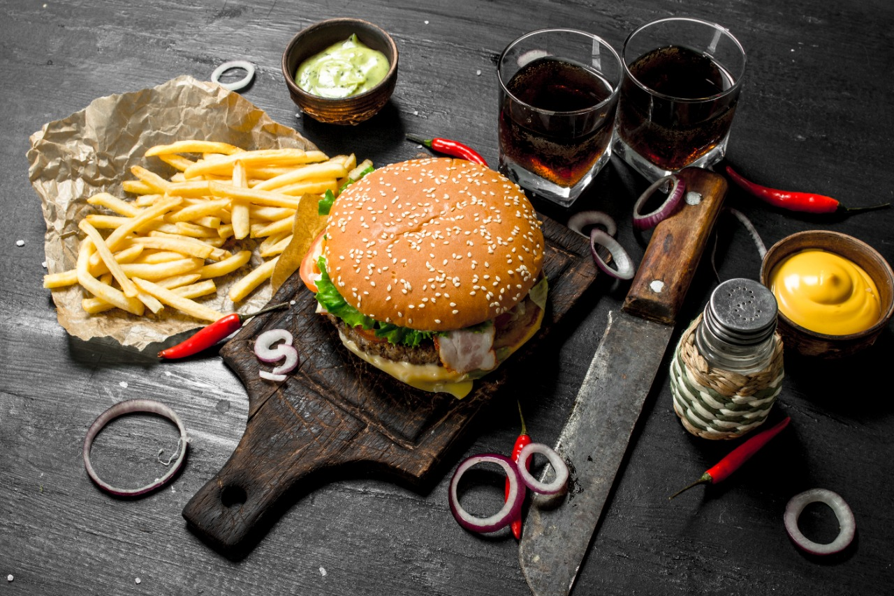

Son productos que parecen alimentos reales, pero tienen muy poco valor nutricional o están muy procesados.
Suelen contener grandes cantidades de azúcar, grasas poco saludables, sal, colorantes y aditivos,
y casi no aportan vitaminas, minerales o fibra.
llenan pero no nutren mucho, por eso se recomienda consumirlos solo de vez en cuando
y priorizar alimentos naturaless.
